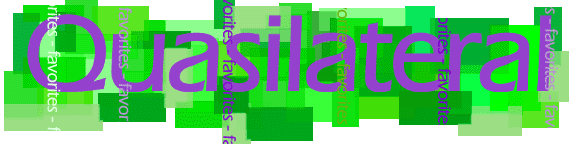

The purpose of this page is to simply inform the visitor of my current interests... either to get an idea of what I am about or look for suggestions :)
Current open books:
|
"The
Elegent Universe" - Brian Greene |
|
Return visitors will find that three is my magic number - one non-fiction, one light fiction/short story collection, and one complex fiction... if any single book is particularly engaging, I'll finnish it without touching the others... |
Discs that are regularly in the CD player:
|
Meat Beat Manifesto: "Actual Sounds and Voices" |
|
These are just the tracks I dig in the car and groove to while updating this page, as a guitar player, I'm regularly trying to play along with Stevie Ray Vaughn, Jimi Hendrix, Led Zeppelin, Santana, Pink Floyd, etc... |
Current Windows desktop wallpaper...
| Rothko - Orange and Tan |
|
While it's probably blasphemy, I opened this image in photoshop and applied the invert color filter to get more of an ice look than the original... |